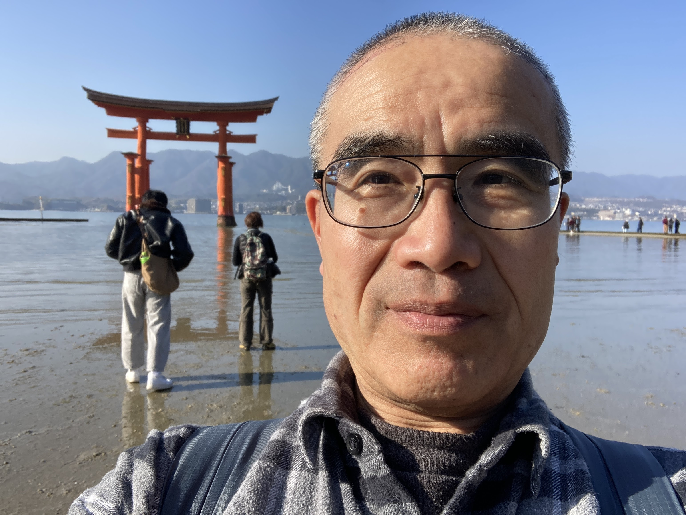

Apoyo local en Hiroshima
Me gusta conocer viajeros y ayudarles a disfrutar Hiroshima, Miyajima, la comida local, las compras y la comunicación diaria de una forma relajada.

Conoce a tu acompañante local
Hola, soy un acompañante local en Hiroshima. Me gusta conocer personas de países hispanohablantes y ayudarles a sentirse más cómodas durante su viaje por Japón.
Ofrezco apoyo amable y casual para turismo, restaurantes, compras, transporte y comunicación diaria. No es un tour formal; la idea es que se sienta como explorar Hiroshima con un amigo local.
Free to join. Tips are appreciated.
I currently offer travel support for free because I genuinely enjoy talking with visitors and helping them enjoy Hiroshima.
If you had a good experience, a tip at the end is warmly appreciated, but it is completely optional.
Transportation fees, meals, entrance tickets, and other personal expenses are not included.
Hiroshima City, Miyajima, Iwakuni, and nearby areas.
Hi, I’m a local travel supporter based around Hiroshima. I like meeting people from different countries and helping them enjoy Japan through simple communication, local tips, and friendly support.
My goal is to make your trip smoother, more comfortable, and more memorable, without making it feel like a strict tour.
Send me your travel date and what you want to do.
I’ll reply with availability and a simple plan.
We meet in Hiroshima and enjoy the day together.
If you enjoyed the support, tips are appreciated.
For availability, meeting place, or custom travel support, please contact me through WhatsApp or Instagram.
Prefer email?
Send Email